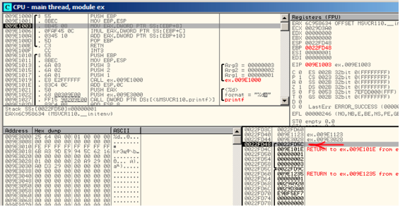

第八章
访问传递参数
现在我们来看函数调用者通过栈把参数传递到被调用函数。被调用函数是如何访问这些参数呢？
#include <stdio.h>
int f (int a, int b, int c)
{
return a*b+c;
};
int main()
{
printf ("%d
", f(1, 2, 3));
return 0;
};
8.1 X86
8.1.1 MSVC
如下为相应的反汇编代码（MSVC 2010 Express）
Listing 8.2 MSVC 2010 Express
_TEXT SEGMENT
_a$ = 8 ; size = 4
_b$ = 12 ; size = 4
_c$ = 16 ; size = 4
_f PROC
push ebp
mov ebp, esp
mov eax, DWORD PTR _a$[ebp]
imul eax, DWORD PTR _b$[ebp]
add eax, DWORD PTR _c$[ebp]
pop ebp
ret 0
_f ENDP
_main PROC
push ebp
mov ebp, esp
push 3 ; 3rd argument
push 2 ; 2nd argument
push 1 ; 1st argument
call _f
add esp, 12
push eax
push OFFSET $SG2463 ; ’%d’, 0aH, 00H
call _printf
add esp, 8
; return 0
xor eax, eax
pop ebp
ret 0
_main ENDP
我们可以看到函数main()中3个数字被圧栈，然后函数f(int, int, int)被调用。函数f()内部访问参数时使用了像_ a$=8 的宏，同样，在函数内部访问局部变量也使用了类似的形式，不同的是访问参数时偏移值（为正值）。因此EBP寄存器的值加上宏_a$的值指向压栈参数。
_a$[ebp]的值被存储在寄存器eax中，IMUL指令执行后，eax的值为eax与_b$[ebp]的乘积，然后eax与_c$[ebp]的值相加并将和放入eax寄存器中,之后返回eax的值。返回值作为printf()的参数。
8.1.2 MSVC+OllyDbg
我们在OllyDbg中观察，跟踪到函数f()使用第一个参数的位置，可以看到寄存器EBP指向栈底，图中使用红色箭头标识。栈帧中第一个被保存的是EBP的值，第二个是返回地址（RA），第三个是参数1，接下来是参数2，以此类推。因此，当我们访问第一个参数时EBP应该加8（2个32-bit字节宽度）。

Figure 8.1: OllyDbg: 函数f()内部
8.1.3 GCC
使用GCC4.4.1编译后在IDA中查看
Listing 8.3: GCC 4.4.1
public f
f proc near
arg_0 = dword ptr 8
arg_4 = dword ptr 0Ch
arg_8 = dword ptr 10h
push ebp
mov ebp, esp
mov eax, [ebp+arg_0] ; 1st argument
imul eax, [ebp+arg_4] ; 2nd argument
add eax, [ebp+arg_8] ; 3rd argument
pop ebp
retn
f endp
public main
main proc near
var_10 = dword ptr -10h
var_C = dword ptr -0Ch
var_8 = dword ptr -8
push ebp
mov ebp, esp
and esp, 0FFFFFFF0h
sub esp, 10h
mov [esp+10h+var_8], 3 ; 3rd argument
mov [esp+10h+var_C], 2 ; 2nd argument
mov [esp+10h+var_10], 1 ; 1st argument
call f
mov edx, offset aD ; "%d
"
mov [esp+10h+var_C], eax
mov [esp+10h+var_10], edx
call _printf
mov eax, 0
leave
retn
main endp
几乎相同的结果。
执行两个函数后栈指针ESP并没有显示恢复，因为倒数第二个指令LEAVE（B.6.2）会自动恢复栈指针。
8.2 X64
x86-64架构下有点不同，函数参数（4或6）使用寄存器传递，被调用函数通过访问寄存器来访问传递进来的参数。
8.2.1 MSVC
MSVC优化后：
Listing 8.4: MSVC 2012 /Ox x64
$SG2997 DB ’%d’, 0aH, 00H
main PROC
sub rsp, 40
mov edx, 2
lea r8d, QWORD PTR [rdx+1] ; R8D=3
lea ecx, QWORD PTR [rdx-1] ; ECX=1
call f
lea rcx, OFFSET FLAT:$SG2997 ; ’%d’
mov edx, eax
call printf
xor eax, eax
add rsp, 40
ret 0
main ENDP
f PROC
; ECX - 1st argument
; EDX - 2nd argument
; R8D - 3rd argument
imul ecx, edx
lea eax, DWORD PTR [r8+rcx]
ret 0
f ENDP
我们可以看到函数f()直接使用寄存器来操作参数，LEA指令用来做加法，编译器认为使用LEA比使用ADD指令要更快。在mian()中也使用了LEA指令，编译器认为使用LEA比使用MOV指令效率更高。
我们来看看MSVC没有优化的情况：
Listing 8.5: MSVC 2012 x64
f proc near
; shadow space:
arg_0 = dword ptr 8
arg_8 = dword ptr 10h
arg_10 = dword ptr 18h
; ECX - 1st argument
; EDX - 2nd argument
; R8D - 3rd argument
mov [rsp+arg_10], r8d
mov [rsp+arg_8], edx
mov [rsp+arg_0], ecx
mov eax, [rsp+arg_0]
imul eax, [rsp+arg_8]
add eax, [rsp+arg_10]
retn
f endp
main proc near
sub rsp, 28h
mov r8d, 3 ; 3rd argument
mov edx, 2 ; 2nd argument
mov ecx, 1 ; 1st argument
call f
mov edx, eax
lea rcx, $SG2931 ; "%d
"
call printf
; return 0
xor eax, eax
add rsp, 28h
retn
main endp
这里从寄存器传递进来的3个参数因为某种情况又被保存到栈里。这就是所谓的“shadow space”2：每个Win64通常（不是必需）会保存所有4个寄存器的值。这样做由两个原因：1）为输入参数分配所有寄存器（即使是4个）太浪费，所以要通过堆栈来访问；2）每次中断下来调试器总是能够定位函数参数3。
调用者负责在栈中分配“shadow space”。
8.2.2 GCC
GCC优化后的代码：
Listing 8.6: GCC 4.4.6 -O3 x64
f:
; EDI - 1st argument
; ESI - 2nd argument
; EDX - 3rd argument
imul esi, edi
lea eax, [rdx+rsi]
ret
main:
sub rsp, 8
mov edx, 3
mov esi, 2
mov edi, 1
call f
mov edi, OFFSET FLAT:.LC0 ; "%d
"
mov esi, eax
xor eax, eax ; number of vector registers passed
call printf
xor eax, eax
add rsp, 8
ret
GCC无优化代码：
Listing 8.7: GCC 4.4.6 x64
f:
; EDI - 1st argument
; ESI - 2nd argument
; EDX - 3rd argument
push rbp
mov rbp, rsp
mov DWORD PTR [rbp-4], edi
mov DWORD PTR [rbp-8], esi
mov DWORD PTR [rbp-12], edx
mov eax, DWORD PTR [rbp-4]
imul eax, DWORD PTR [rbp-8]
add eax, DWORD PTR [rbp-12]
leave
ret
main:
push rbp
mov rbp, rsp
mov edx, 3
mov esi, 2
mov edi, 1
call f
mov edx, eax
mov eax, OFFSET FLAT:.LC0 ; "%d
"
mov esi, edx
mov rdi, rax
mov eax, 0 ; number of vector registers passed
call printf
mov eax, 0
leave
ret
System V *NIX [21]没有“shadow space”，但被调用者可能会保存参数，这也是造成寄存器短缺的原因。
8.2.3 GCC: uint64_t instead int
我们例子使用的是32位int，寄存器也为32位寄存器（前缀为E-）。
为处理64位数值内部会自动调整为64位寄存器：
#include <stdio.h>
#include <stdint.h>
uint64_t f (uint64_t a, uint64_t b, uint64_t c)
{
return a*b+c;
};
int main()
{
printf ("%lld
", f(0x1122334455667788,0x1111111122222222,0x3333333344444444));
return 0;
};
Listing 8.8: GCC 4.4.6 -O3 x64
f proc near
imul rsi, rdi
lea rax, [rdx+rsi]
retn
f endp
main proc near
sub rsp, 8
mov rdx, 3333333344444444h ; 3rd argument
mov rsi, 1111111122222222h ; 2nd argument
mov rdi, 1122334455667788h ; 1st argument
call f
mov edi, offset format ; "%lld
"
mov rsi, rax
xor eax, eax ; number of vector registers passed
call _printf
xor eax, eax
add rsp, 8
retn
main endp
代码非常相似，只是使用了64位寄存器（前缀为R）。
8.3 ARM
8.3.1 未优化的Keil + ARM mode
.text:000000A4 00 30 A0 E1 MOV R3, R0
.text:000000A8 93 21 20 E0 MLA R0, R3, R1, R2
.text:000000AC 1E FF 2F E1 BX LR
...
.text:000000B0 main
.text:000000B0 10 40 2D E9 STMFD SP!, {R4,LR}
.text:000000B4 03 20 A0 E3 MOV R2, #3
.text:000000B8 02 10 A0 E3 MOV R1, #2
.text:000000BC 01 00 A0 E3 MOV R0, #1
.text:000000C0 F7 FF FF EB BL f
.text:000000C4 00 40 A0 E1 MOV R4, R0
.text:000000C8 04 10 A0 E1 MOV R1, R4
.text:000000CC 5A 0F 8F E2 ADR R0, aD_0 ; "%d
"
.text:000000D0 E3 18 00 EB BL __2printf
.text:000000D4 00 00 A0 E3 MOV R0, #0
.text:000000D8 10 80 BD E8 LDMFD SP!, {R4,PC}
main()函数里调用了另外两个函数，3个值被传递到f();
正如前面提到的，ARM通常使用前四个寄存器（R0-R4）传递前四个值。
f()函数使用了前三个寄存器（R0-R2）作为参数。
MLA (Multiply Accumulate)指令将R3寄存器和R1寄存器的值相乘，然后再将乘积与R2寄存器的值相加将结果存入R0，函数返回R0。
一条指令完成乘法和加法4，如果不包括SIMD新的FMA指令5，通常x86下没有这样的指令。
第一条指令MOV R3,R0，看起来冗余是因为该代码是非优化的。
BX指令返回到LR寄存器存储的地址，处理器根据状态模式从Thumb状态转换到ARM状态，或者反之。函数f()可以被ARM代码或者Thumb代码调用，如果是Thumb代码调用BX将返回到调用函数并切换到Thumb模式，或者反之。
8.3.2 Optimizing Keil + ARM mode
.text:00000098 f
.text:00000098 91 20 20 E0 MLA R0, R1, R0, R2
.text:0000009C 1E FF 2F E1 BX LR
这里f()编译时使用完全优化模式(-O3),MOV指令被优化，现在MLA使用所有输入寄存器并将结果置入R0寄存器。
8.3.3 Optimizing Keil + thumb mode
.text:0000005E 48 43 MULS R0, R1
.text:00000060 80 18 ADDS R0, R0, R2
.text:00000062 70 47 BX LR
Thumb模式下没有MLA指令，编译器做了两次间接处理，MULS指令使R0寄存器的值与R1寄存器的值相乘并将结果存入R0。ADDS指令将R0与R2的值相加并将结果存入R0。